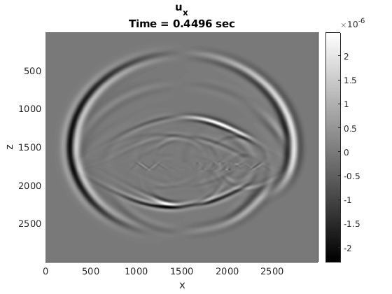
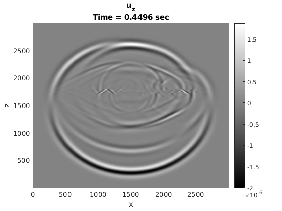
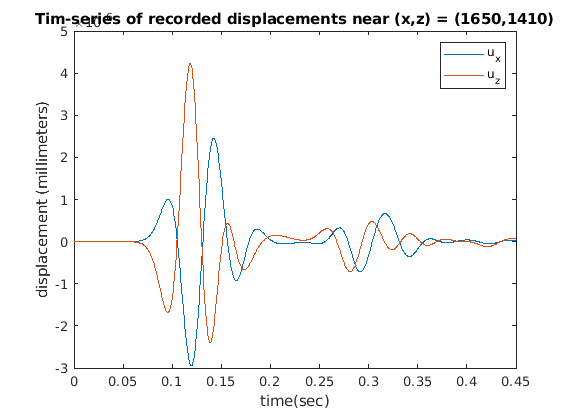

clear all
close all
m = 1000; N = 1000;
rho = 2200;
a = 0; b = 3000;
h = (b-a)/m;
x = []; xn = [];
z = []; zn = [];
for i = 1:m
x1 = (i-1)*h; x = [x,x1];
xn1 = (i-0.5)*h; xn = [xn,xn1];
z1 = (i-1)*h; z = [z,z1];
zn1 = (i-0.5)*h; zn = [zn,zn1];
end
[X,Z] = meshgrid(x,z);
[Xn,Zn] = meshgrid(xn,zn);
[Xnx,Znx] = meshgrid(x,zn);
[Xnz,Znz] = meshgrid(xn,z);
mu1 = zeros(m); mu2 = zeros(m);
lamb = zeros(m);
coef = zeros(m);
for i = 1:m
lamb(i,:) = lambda(Xn(i,:),Zn(i,:));
mu1(i,:) = mu(Xn(i,:),Zn(i,:));
mu2(i,:) = mu(X(i,:),Z(i,:));
coef(i,:) = lamb(i,:) + 2*mu1(i,:);
end
s = [-5/2 -3/2 -1/2 1/2 3/2 5/2];
w = weights(0,s,1); w1 = w(2,:);
Dz = (1/h)*circulant([w1(4:end),zeros(1,m-6),w1(1:3)],1);
Dz = sparse(Dz); Dx = -Dz';
v_x0 = zeros(m);
v_z0 = zeros(m);
tau_xx0 = zeros(m);
tau_zz0 = zeros(m);
tau_xz0 = zeros(m);
at =0; bt = 0.45;
k = (bt-at)/N;
t = at:k:bt;
tn = (0:N)*k;
for j = 1:m
if x(j) == 1650
x_xp = j;
end
if z(j) == 1410
z_xp = j;
end
end
x0 = 1500;
z0 = 1500;
S1 = zeros(m,m); S2 = S1;
for i = 1:m
S1(i,:) = Deltah(X(i,:)-x0,h);
S2(i,:) = Deltah(Z(i,:)-z0,h);
end
explosion_site = h^2*(S1.*S2);
u_x = zeros(m,m); u_xp = zeros(N,1);
u_z = zeros(m,m); u_zp= zeros(N,1);
v_x0 = v_x0 + 0.5*(k/rho)*(tau_xx0*Dx + Dz'*tau_xz0);
v_z0 = v_z0 + 0.5*(k/rho)*(tau_xz0*Dz + Dx'*tau_zz0);
D_z = Dz'; D_x = Dx';
for n = 2:N+1
source = (Sourcetime(t(n)) - Sourcetime(t(n-1)))*explosion_site;
tau_xx0 = tau_xx0 + k*(coef.*(v_x0*Dz) + lamb.*D_z*v_z0) + source;
tau_zz0 = tau_zz0 + k*(lamb.*(v_x0*Dz) + coef.*D_z*v_z0) + source;
tau_xz0 = tau_xz0 + k*mu2.*(v_z0*(Dx) + D_x*v_x0);
v_x0 = v_x0 + (k/rho)*(tau_xx0*Dx + D_z*tau_xz0);
v_z0 = v_z0 + (k/rho)*(tau_xz0*Dz + D_x*tau_zz0);
u_x = u_x + k*v_x0; u_xp(n) = u_x(x_xp,z_xp);
u_z = u_z + k*v_z0; u_zp(n) = u_z(x_xp,z_xp);
if mod(n,10) == 0
figure(1)
p = pcolor(Xnx,Znx,u_x); set(p, 'EdgeColor', 'none');
xlabel('x'); ylabel('z');
colormap(gray(100)); colorbar;
title({'u_x';['Time = ',sprintf('%.4f',t(n)),' sec']});
set(gca,'YDir','Reverse')
drawnow;
end
if mod(n,10) == 0
figure(2)
p = pcolor(Xnx,Znx,u_z); set(p, 'EdgeColor', 'none');
xlabel('x'); ylabel('z');
colormap(gray(100)); colorbar;
title({'u_z';['Time = ',sprintf('%.4f',t(n)),' sec']});
drawnow;
end
end
figure(3)
plot(t, u_xp)
xlabel('time(sec)'); ylabel('displacement (millimeters)');
title('Tim-series of recorded displacements near (x,z) = (1650,1410)');
hold on
plot(t, u_zp)
legend('u_x','u_z');
function la = lambda(x,z)
rho = 2200;
n = size(x,2);
for i = 1:n
Cp(i) = CP(x(i),z(i));
Cs(i) = CS(x(i),z(i));
end
la = rho*Cp.^2 - 2*rho*Cs.^2;
end
function muu = mu(x,z)
rho = 2200;
n = size(x,2);
for i = 1:n
Cs(i) = CS(x(i),z(i));
end
muu = rho*Cs.^2;
end
function delta = Deltah(ep,h)
n = size(ep,2);
for i = 1:n
if abs(ep(i)) <= 2*h
delta(i) = (1/(4*h))*(1+cos((ep(i)*pi)/(2*h)));
elseif abs(ep(i)) > 2*h
delta(i) = 0;
end
end
end
function S = Sourcetime(t)
t0 = 0.07;
fM = 16;
gamma = 5*10^6;
S = gamma*(1 - 2*pi^2*fM^2*(t-t0)^2)*exp(-pi^2*fM^2*(t-t0)^2);
end
function cp = CP(x,z)
if ((1500 <= x) && (x <= 2100)) && ((1700 <= z) && (z <= 1800))
cp = 1450;
else
cp = 3200;
end
end
function cs = CS(x,z)
if ((1500 <= x) && (x <= 2100)) && ((1700 <= z) && (z <= 1800))
cs = 0;
else
cs = 1847.5;
end
end
  